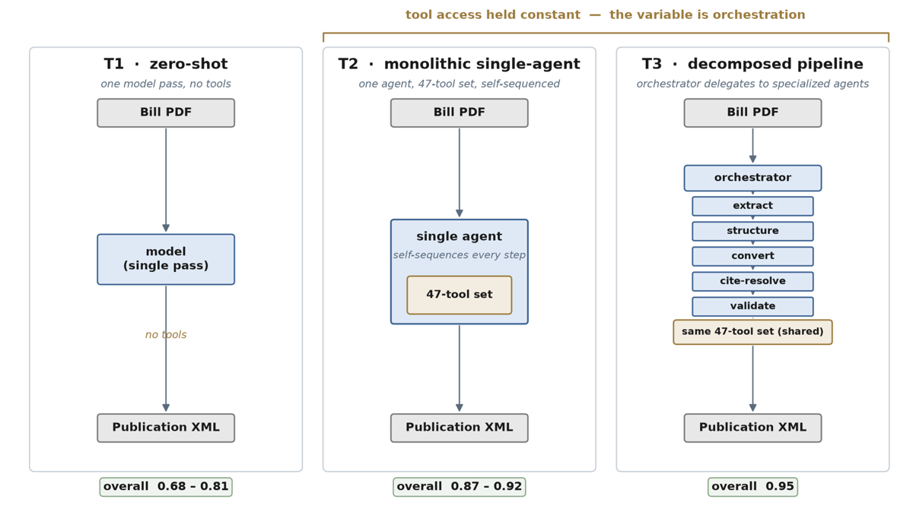
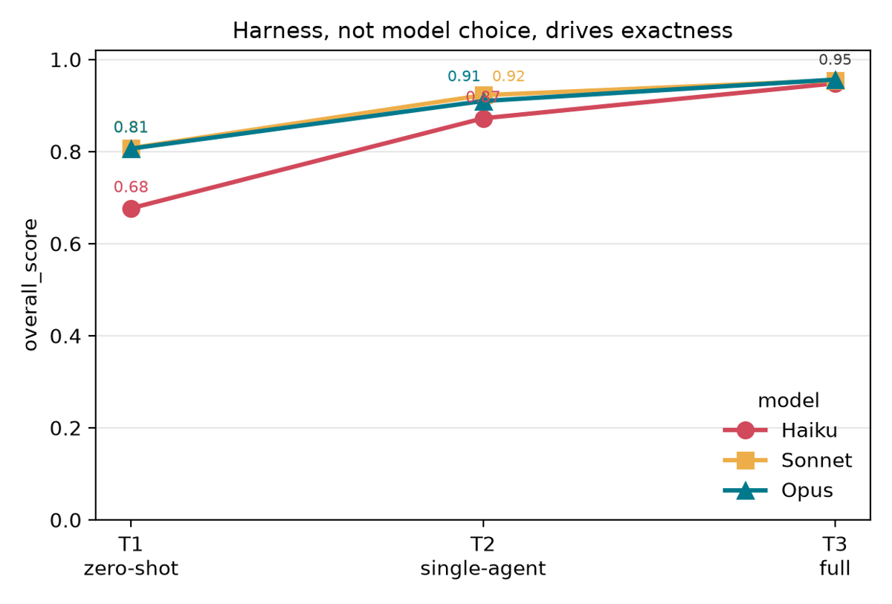
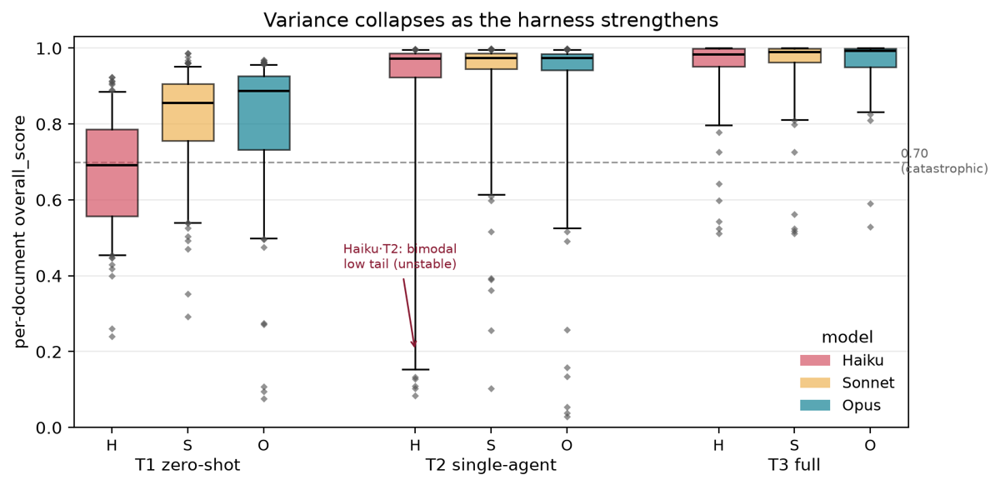

TL;DR : sur une tâche juridique de reproduction exacte (bill PDF → XML sous schéma strict), une ablation croisée 3 harnesses × 3 modèles Claude sur 153 bills gold montre que le harness pèse plus que le modèle — le modèle le plus faible dans le pipeline complet (Haiku·T3 0.948) bat le plus fort nu (Opus·T1 0.806) — et que la normalisation de citations est une propriété du harness (lookup déterministe vers une autorité externe), pas des poids.
Claim principal, précisément : sur Overall = moyenne non pondérée de (NED char, TEDS, amendment F1), l'écart inter-modèles passe de 0.677–0.807 à T1 (zero-shot) à 0.946–0.954 à T3 (pipeline décomposé), et Haiku·T3 − Opus·T1 = +0.117, paired bootstrap p<0.001, n=133 [Abstract ; Tab. 1 ; §5.1]. Claim secondaire : comme T2 et T3 atteignent le même jeu d'outils, le gain T2→T3 s'impute à l'« orchestration » (décomposition + état persisté + isolation de contexte) [§4, §5.1].
⚠️ Deux réserves structurantes, développées en 7.0 et 7 : (a) aucune comparaison n'est appariée en budget — les auteurs écrivent explicitement ne rapporter « no tokens, latency or dollar cost per setting » [Limitations/What we do not measure] ; (b) le rétrécissement de l'écart est en grande partie une saturation du composite : à T3 la médiane par document est ≈0.99 [Fig. 3], le composite exclut les citations [§4 Composite], et c'est précisément là que l'écart inter-modèles subsiste (cite-norm T3 : Haiku .801 vs Sonnet .954, soit 15 pts) [Tab. 1].
Trois niveaux de scaffolding, la connaissance tenue constante, seul le harness varie [Tab. 2] :
| T1 | T2 | T3 | |
|---|---|---|---|
| Bill PDF natif | oui | oui | oui |
| Templates XML | oui | oui | oui |
| Règles de juridiction | oui | oui | oui |
| Playbook ordonné | aucun | 9 étapes | 21 étapes |
| Outils | aucun | 47 | 17 |
| Sous-agents | aucun | aucun | 7 |
| État persisté | aucun | aucun | oui |
statute_lookup_batch, qui renvoie l'identifiant canonique propre à la juridiction pour chaque citation en un aller-retour), distribution (remise au publish step) [§4, App. C]. ⚠️ Les signatures complètes ne sont pas données : seul statute_lookup_batch est nommé ; les 47 outils feuilles ne sont pas listés.Exemple de trajectoire : pas de trace agentique. Le papier donne un exemple entrée → sortie sur un bill public (Idaho HB 66, 2025, amendant Idaho Code §72-713) [App. A]. Source PDF : (1) The commission shall give at least ten (10) days' written notice … either by personal service or by [barré: registered or certified mail] [souligné: email or certified mail]. Fragment XML cible (noms d'éléments = stand-ins, vocabulaire du schéma confidentiel) :
La frontière déterministe / modèle — l'idée de design la plus réutilisable : « the harness computes deterministically whatever needs no reasoning and leaves the model only interpretation » [§4]. Cas canonique : la résolution de citation est une capacité du harness, parce que l'identifiant canonique est retrouvé auprès d'une source autoritative, pas généré depuis les poids.
Pas de reward (aucun entraînement) : suite de vérifieurs d'évaluation, tous déterministes, aucun juge LLM, aucun reward model.
NED_char(G,P) = 1 − Lev(φ(G),φ(P)) / max(|φ(G)|,|φ(P)|) sur le corps seul (front matter et champs d'identifiants exclus). φ normalise les espaces, uniformise guillemets et tirets ; pour cette métrique seulement, φ replie la casse (la capitalisation d'un titre étant un artefact de rendu du PDF). Variante mot rapportée mais le composite prend la version caractère, qui attrape mieux les petites pertes de texte [§4].
2. Layout Topology — TEDS : TEDS(T_G,T_P) = 1 − TED/max(|T_G|,|T_P|), APTED à coûts unitaires, tags conservés, texte ignoré. Indéfini si un corps est vide ou non parsable [§4].
3. Legislative Mutations — match exact par multiset, pas de recouvrement flou : spans added.material/deleted.material, normalisés par φ en préservant la casse, traités comme multisets de paires (tag, φ(texte)) ; TP = |G∩P|, FP = |P−G|, FN = |G−P|. Micro F1 sur les documents dont le gold contient des spans (variante de Tab. 1) ; le composite utilise la variante tous-documents, où un document correctement vide compte comme vrai négatif [§4].
4. Citation Fidelity, en deux signaux indépendants sur les nœuds cite.query : localization (la citation a-t-elle été trouvée et taguée ?) et normalization (celles trouvées sont-elles résolues au bon identifiant canonique ? — match sur l'identifiant, pas sur le texte visible). Micro F1. Règles : citations répétées comptées et non collapsées (k occurrences gold ⇒ k instances exigées) ; un span tagué mais non résolu compte comme trouvé en localization et comme miss en normalization ; une citation que le gold lui-même laisse non résolue est retirée des deux côtés [§4].Overall = ⅓(NED_char + TEDS + Amend. F1), moyenne non pondérée, calculée par document puis macro-moyennée. Les deux colonnes citations sont exclues du composite, délibérément, pour qu'un texte et une structure quasi parfaits ne masquent pas un échec de citation [§4].Overall non scorés pour les deux plus gros documents — ils sortent du composite mais gardent toutes les autres dimensions [§4, Tab. 6] ; la validité DTD n'est pas scorée du tout, la validation tournant dans le publish step aval, hors de l'artefact pre-review mesuré [Limitations/What we do not measure].cite.query, donc la localization reflète en partie la compétence de tagging fournie par le harness, pas la détection de citation seule [§4].Non applicable : aucun entraînement, aucun RL, aucun DPO, aucun gradient. Le papier ne fait qu'inférer avec trois snapshots d'API épinglés [§5 note 7]. Les quelques « hyperparamètres » existants sont ceux de l'inférence et de l'éval :
Riche pour un papier d'éval. Aucun reward hacking au sens strict (rien n'optimise le score), mais quatre familles de failure modes de harness, chacune détectée et parfois corrigée par le passage à T3.
cite.query avec résolution imparfaite (poolé sur les trois modèles T3) [Tab. 7] : dropped/partial subset 23 docs (mode dominant — la plupart des citations résolvent, un groupe est silencieusement omis, typiquement celles d'un titre statutaire que l'étape de résolution n'atteint jamais, ex. NJ SB 3587) ; granularity/neighbor id 3 (ID SB 1023) ; lookup miss laissé non résolu 2 (ID SB 1142) ; range over-expansion 1 outlier Idaho qui gonfle à lui seul le résidu brut de la juridiction (ID SB 1008) ; plus 3 docs d'artefact de capture de texte en localization (NJ AB 5729), qui n'est pas une erreur de résolution — l'identifiant résout bien, c'est le span visible capturé qui diffère du gold. Lecture des auteurs : les modes dominants sont coverage-limited, pas reasoning-limited (le codes service ne renvoie pas d'identifiant) [§5.2, Tab. 7].⚠️ Mon évaluation — surfaces de hacking latentes si ces mesures servaient de reward : (a) le match de spans d'amendement est position-blind, donc un policy pourrait apprendre à placer les spans n'importe où pour un gain de ≤11.9 % de crédit non mérité (borne mesurée par les auteurs, mais mesurée sur des modèles non entraînés contre la métrique — sous pression d'optimisation la borne ne tient plus) ; (b) le cap TEDS à 4 000 nodes supprime le composite des documents les plus durs, donc produire un document qui dépasse le cap retire le cas de la note ; (c) la validité DTD n'étant pas scorée, rien ne pénalise un XML conforme au scorer mais invalide au schéma ; (d) la sérialisation T3 produit plus de nœuds que le gold (SB 2025 : 22 239 prédits contre 40 944 gold ; AB 4700 : 22 146 contre 8 229) sans que NED ni F1 en souffrent [Tab. 6] — un signal structurel qui ne contraint pas le comptage de nœuds.
| Chiffre annoncé | Où il est annoncé | Source dans le papier | Verdict |
|---|---|---|---|
| 153 gold bills, deux juridictions | Abstract | §3 : 103 Idaho + 50 NJ ; Tab. 4 | confirmé |
| 3 harnesses × 3 modèles Claude | Abstract | §4, §5 : 459 runs tentés par harness = 153×3 | confirmé |
| « the weakest model in the full pipeline beats the strongest model alone (0.948 versus 0.806, paired bootstrap p<0.001) » | Abstract, Conclusion | Tab. 1 (Haiku·T3 0.948 ; Opus·T1 0.806) ; §5.1 : Δ=+0.117, p<0.001, n=133 | confirmé — mais apparié sur 133 des 153 documents seulement, et jamais apparié en budget d'inférence (voir ci-dessous) |
| Opus zero-shot « reaches only 0.806 », « normalization 0.232 » | Intro | Tab. 1 : 0.806 ; 0.232 | confirmé |
| T2 cite-norm « 0.88 and 0.59 for Sonnet and Opus against Haiku's 0.10 » | Intro | Tab. 1 : .881 / .593 / .103 | confirmé (arrondis) |
| Haiku « recovers only once T3 gives it a dedicated citation agent (0.80) » | Intro | Tab. 1 : .801 | confirmé sur le chiffre ; l'attribution causale à l'agent dédié est une lecture, que les auteurs qualifient eux-mêmes (« shows only the gap, not its cause », §5.2) |
| « Because the two agentic harnesses share identical tools, their gap comes from orchestration » | Abstract, Conclusion | §4 + Tab. 2 : accès identique mais exposition différente (47 feuilles directes vs 17 composites), playbooks de 9 vs 21 étapes ; Limitations : décomposition + état persisté + isolation de contexte « travel together by construction », ablations séparatrices renvoyées aux travaux futurs | sur-généralisé — l'accès aux outils est constant, pas l'interface ni le playbook ; et « orchestration » reste un bundle de 3 causes non séparées. Les auteurs l'écrivent en Limitations, pas dans l'abstract |
| « Across four scored dimensions, the model spread at zero-shot (0.68 to 0.81) narrows to 0.95 at the full pipeline » | Abstract | Tab. 1 : Overall T1 0.677–0.807, T3 0.946–0.954 — mais Overall est la moyenne de trois mesures (NED, TEDS, Amend. F1) ; les deux colonnes citations en sont exclues [§4 Composite] |
contredit sur le cadrage : les valeurs sont bonnes, le « four scored dimensions » ne l'est pas — c'est 3 dimensions sur 4, et celle qui est retirée est justement celle où l'écart persiste. Formulation en plus fautive (« spread … narrows to 0.95 » donne un niveau, pas un écart) |
| « the residual sits almost entirely in citation normalization » | Abstract | Tab. 1, T3 : résidu cite-norm = .199 (Haiku) / .046 (Sonnet) / .057 (Opus) ; résidu amendment F1 = .124 / .108 / .102 | contredit pour les modèles forts : à T3, le résidu amendement (≈.10) est deux fois le résidu de normalisation de citations pour Sonnet et Opus. Vrai pour Haiku seulement. Le corps est correct (« citations and amendments », §1 contribution 3 ; « citation exactness and the harder New Jersey documents », Conclusion) — c'est l'abstract qui durcit |
| « harness's advantage over the model is widest on New Jersey » | §3, §5.5 | Tab. 5 : Sonnet·T3 − Opus·T1 = +0.117 (ID : 0.977−0.860) et +0.174 (NJ : 0.871−0.697) | confirmé (calcul vérifié) |
| Position-blindness ≤ 11.9 % | §4 | §4 : 88.1 % d'accord contextuel ; pénalités −0.082/−0.085/−0.094 à T1/T2/T3 | confirmé, et honnêtement présenté comme borne supérieure |
Overall ≠ moyenne des colonnes affichées |
Tab. 1 note | App. D : Haiku·T1 naïf 0.594 vs 0.677 rapporté ; dénominateurs différents, « none of it is a computation error » | confirmé et expliqué — transparence inhabituelle, à porter au crédit du papier |
Verdict global 7.0 : l'ossature chiffrée est fidèle et vérifiable ligne à ligne contre Tab. 1 ; les deux dérapages sont dans l'abstract et vont tous deux dans le même sens — ils font paraître la convergence inter-modèles plus complète qu'elle n'est, en comptant les citations parmi les dimensions convergées (elles sont hors composite) et en logeant tout le résidu dans la normalisation de citations (le résidu amendement est plus gros pour Sonnet/Opus).
Overall par cellule, IC 95 % bootstrap sous les valeurs T1→T3 [Tab. 1] :
| Modèle | Harness | Overall | NED | TEDS | Amend. F1 | Cite local. | Cite norm. |
|---|---|---|---|---|---|---|---|
| Haiku 4.5 | T1 | 0.677 [.654,.700] | 0.846 | 0.647 | 0.288 | 0.206 | 0.024 |
| Haiku 4.5 | T2 | 0.872 [.816,.921] | 0.882 | 0.869 | 0.808 | 0.367 | 0.103 |
| Haiku 4.5 | T3 | 0.948 [.932,.963] | 0.982 | 0.946 | 0.876 | 0.813 | 0.801 |
| Sonnet 4.6 | T1 | 0.807 [.785,.829] | 0.872 | 0.794 | 0.598 | 0.185 | 0.282 |
| Sonnet 4.6 | T2 | 0.922 [.899,.943] | 0.948 | 0.915 | 0.871 | 0.869 | 0.881 |
| Sonnet 4.6 | T3 | 0.954 [.937,.969] | 0.983 | 0.954 | 0.892 | 0.954 | 0.954 |
| Opus 4.6 | T1 | 0.806 [.778,.834] | 0.858 | 0.789 | 0.653 | 0.229 | 0.232 |
| Opus 4.6 | T2 | 0.910 [.879,.937] | 0.936 | 0.904 | 0.847 | 0.631 | 0.593 |
| Opus 4.6 | T3 | 0.946 [.916,.970] | 0.985 | 0.955 | 0.898 | 0.943 | 0.943 |
Lectures qui comptent : - Effet harness ≫ effet modèle : Haiku T1→T3 = +0.271 ; Haiku→Opus à T1 = +0.129 [§5.1]. - Renversement de classement à T2 : Sonnet (0.922) devant Opus (0.910), indistinguable du bruit (p=0.39, n=151) — non interprété par les auteurs. Mais la dimension sous-jacente est robuste : cite-local .869 vs .631 (p=0.004) et cite-norm .881 vs .593 (p<0.001), n=74. Le composite dilue un écart de 24–29 points de citations sous le seuil de significativité [§5.1]. Conclusion des auteurs, prudente et juste : l'axe modèle se lit « faible (Haiku) vs fort (Sonnet et Opus, qui se disputent la tête) », pas comme un classement propre à trois points. - Fiabilité [Tab. 3] : std pooled 0.167 → 0.188 → 0.099 ; taux de documents <0.70 : 31 % (T1, avec un split par modèle très marqué : 52 % Haiku, 23 % Opus, 19 % Sonnet) → 8 % (T2) → 4 % (T3). - Par juridiction [Tab. 5] : NJ plus dur partout ; Opus·T3 sur NJ reste à 0.809 contre Haiku·T3 0.879 et Sonnet·T3 0.871 — c'est la seule cellule T3 où un modèle décroche nettement, et c'est le plus gros modèle.
Le papier est une ablation ; son design est son principal apport.
- T1→T2 (ajout d'outils) : gagne presque tout le texte et la structure (NED .846→.882 Haiku, .872→.948 Sonnet ; TEDS .647→.869, .794→.915) et l'essentiel des amendements (Haiku .288→.808) [Tab. 1, §5.2, Fig. 5]. Mais dégrade la robustesse (échecs d'intégrité 7→21 /459 ; std 0.167→0.188).
- T2→T3 (orchestration, outils constants) : +0.076 / +0.032 / +0.036 sur Overall pour Haiku/Sonnet/Opus. ⚠️ Ce gain moyen est presque entièrement un effet de queue, pas un gain sur le document typique : les médianes par document sont déjà ≈0.97 à T2 [Fig. 3], et ce qui bouge est la dispersion (std 0.188→0.099) et le taux de catastrophes (8 %→4 %) [Tab. 3]. Formulation correcte du résultat : l'orchestration achète de la fiabilité, pas de la qualité médiane.
- Ce que T2→T3 n'isole pas : les auteurs listent eux-mêmes trois causes confondues — décomposition, état persisté checkpointé, isolation de contexte par agent — « these three travel together by construction » ; les ablations séparatrices sont renvoyées aux travaux futurs [Limitations]. Il faut y ajouter l'exposition d'outils (47 feuilles vs 17 composites) et la longueur du playbook (9 vs 21), non mentionnées comme confusions.
- Ablation du vérifieur (rare et bienvenue) : re-scoring avec clé de contexte sur les spans d'amendement, qui montre que la position-blindness ne change pas l'ordre [§4].
Overall ≠ moyenne des colonnes (App. D), bornent la position-blindness, signalent que Tab. 6 ne tient que sur Sonnet, et listent leurs confusions en Limitations.Verdict : plausible mais fragile — fort sur le design, à ne pas citer comme une mesure. Le motif qualitatif (staircase monotone, effondrement de la queue, citations comme propriété du harness) est solide, cohérent entre dimensions, et renforcé plutôt qu'affaibli sur la juridiction dure. Mais les deux chiffres qui circuleront — « 0.948 vs 0.806 » et « l'écart inter-modèles disparaît » — sont (a) non appariés en budget et (b) mesurés sur un composite saturé qui exclut la dimension discriminante. ⚠️ Lecture prudente : le harness déplace le plancher ; il ne supprime pas l'écart inter-modèles, il le relègue dans la dimension sortie du score.

Ce qu'il faut voir : la variable expérimentale, posée visuellement. Même entrée (bill PDF) et même sortie (publication XML) aux trois tiers ; T1 = un passage sans outil ; T2 = un agent qui auto-séquence avec les 47 outils ; T3 = orchestrateur + extract / structure / convert / cite-resolve / validate sur le même jeu de 47 outils (shared). Bandeau du haut : « tool access held constant — the variable is orchestration ». Bandes du bas : 0.68–0.81 → 0.87–0.92 → 0.95. ⚠️ Ce que la figure ne montre pas : l'exposition diffère (47 feuilles vs 17 composites, Tab. 2), le playbook aussi (9 vs 21 étapes), et T3 ajoute l'état persisté — l'« orchestration » est un bundle.
Ce qu'il faut voir : le résultat principal, et sa limite. Les trois courbes montent monotonement et convergent à T3 (0.95 pour les trois) ; l'écart vertical T1→T3 de Haiku (0.68→0.95) dépasse largement l'écart Haiku→Opus à T1 (0.68→0.81). Le croisement Sonnet/Opus à T2 est visible. ⚠️ Deux absences : aucune barre d'erreur alors que les IC existent (Tab. 1), et l'axeoverall_score est un composite sans les citations — la figure qui montrerait un écart résiduel est Fig. 4 (fig2_citation.png), où la normalisation de Haiku plafonne à .801 contre .954/.943.

Ce qu'il faut voir : la figure la plus informative du papier, et celle qui recadre le claim. Les médianes sont déjà ≈0.97 dès T2 pour les trois modèles : le gain moyen T2→T3 ne vient donc pas du document typique mais de la queue basse. À T2, Haiku a une moustache qui descend à ≈0.15 (annotée « bimodal low tail (unstable) ») et Opus une grappe d'outliers sous 0.20 — plus mauvais qu'à T1 en dispersion, cohérent avec std 0.188 > 0.167 (Tab. 3). À T3 les boîtes sont écrasées contre 1.0 et seuls quelques points traversent la ligne 0.70 « catastrophic ». ⚠️ C'est aussi la preuve visuelle du plafond : à T3 la médiane est saturée, donc aucune métrique ne peut plus y distinguer les modèles.Le papier est juridique, mais sur une tâche de reproduction, pas de raisonnement : rien ne transfère tel quel vers Harvey LAB ou Vals Legal Research Bench, où la sortie est un argumentaire. Ce qui transfère est architectural.
| Ingrédient | Choix du papier | Équivalent juridique (Gemini Law) | Transfert | Ce qui manque |
|---|---|---|---|---|
| Source des tâches | PDF publics de législatures d'État + gold = sortie d'un système legacy corrigée par un SME [§3, Limitations] | Mémos/recherches produits par un système ou des juniors, corrigés par un avocat senior ; sources publiques (codes, jurisprudence, registres) | adaptable | Le motif « legacy output + correction experte » est le bon gabarit de data cheap pour le droit, mais ici 153 docs et 1 SME — trop peu pour du RL ; aucun chiffre de coût ni d'heures |
| Vérifieur | 5 scorers déterministes séparés (NED char, TEDS, F1 multiset de spans, localization, normalization), aucun juge LLM, un composite à 3 termes qui exclut la dimension discriminante [§4] | Citation checking contre l'autorité (identifiant canonique, existence, juridiction, statut en vigueur) comme signal exact ; le reste (argumentation) reste non exactement vérifiable | direct sur le sous-signal citations, non sur le reste | Le droit n'a d'exactitude que sur les citations et le périmètre ; aucune des 5 mesures ne couvre la justesse d'un raisonnement. Le papier ne donne aucun vérifieur pour la partie argumentative |
| Harness / outils | 47 outils feuilles via 6 services MCP, dont statute_lookup_batch en un aller-retour ; 7 sous-agents ; frontière déterministe/modèle explicite [§4, App. C] |
Service de citation canonique + taxonomie de juridiction + ID-mapping inter-versions, exposés en outils typés ; agent dédié à la vérification de citations | direct | Les signatures d'outils ne sont pas publiées ; et la couverture de l'autorité externe est le point de rupture (modes dominants du résidu = coverage-limited, Tab. 7) |
| Algo | aucun (inférence seule) | — | non | Le papier ne dit rien sur le RL ; il ne peut servir qu'à dimensionner l'alternative au RL |
| Curriculum | aucun ; la difficulté est révélée par la longueur et la juridiction (NJ > ID) [Tab. 4, Tab. 5] | Curriculum par juridiction et par longueur de document, les cas longs/multi-juridictions en fin | adaptable | Aucune donnée sur l'effet d'un ordre, puisqu'il n'y a pas d'entraînement |
| Anti-hacking | aucun test adverse ; une seule faiblesse de métrique bornée (position-blindness ≤11.9 %) [§4] | Un reward de citation doit exiger l'identifiant et la position et la couverture (le mode dominant est l'omission silencieuse) | adaptable | Rien n'est testé sous pression d'optimisation ; le cap TEDS, la validité DTD non scorée et le comptage de nœuds libre sont des trous exploitables (voir §5) |
| État / mémoire | execution store persisté, checkpoints asynchrones, reprise d'une étape bloquée [Fig. 7] | Même besoin sur une recherche juridique longue : état explicite entre étapes plutôt qu'un contexte unique | direct | Aucun chiffre (débit, coût de checkpoint, taux de reprise) |
| Routage du résidu | résidu concentré et identifiable → auto-publier le résolu, remonter citations et amendements à un éditeur ; « expert review is a permanent part of the architecture, not a temporary crutch » [Conclusion] | Auto-livrer les parties vérifiables, router les citations et les points juridiquement portants à un avocat | direct | Le problème ouvert, nommé par les auteurs : des confidences calibrées assez bonnes pour piloter le routage. Non résolu ici |
Arbitrage harness vs RL — ce que ce papier autorise à dire (la question posée). 1. Sur un sous-problème dont la vérité vit dans une autorité externe (identifiant canonique d'une citation), le harness n'est pas seulement moins cher que le post-training : il est le seul levier correct. L'argument des auteurs est de type, pas de degré — « the canonical identifier is retrieved from an authoritative source, not generated from the weights » [§4, §5.2] — et il est corroboré par le fait qu'aucun modèle, y compris le plus gros, ne dépasse .282 en normalisation sans outil [Tab. 1]. Corollaire direct pour Gemini Law : ne jamais mettre de reward sur la génération d'une citation depuis les poids ; mettre le reward sur l'appel correct de l'outil de lookup et sur la couverture des citations trouvées. 2. Mais le papier ne montre pas que le harness remplace le modèle en général. Il montre (a) un plancher relevé pour le modèle faible, (b) une queue de catastrophes effondrée, (c) un écart inter-modèles qui survit dans la dimension exclue du composite (.801 vs .954 en cite-norm à T3) et sur la juridiction dure (Opus·T3 à 0.809 sur NJ). Lu correctement, c'est : le harness est le meilleur premier euro ; il ne clôt pas le dossier modèle. 3. Le signal le plus actionnable pour arbitrer : T2 est pire que T1 en robustesse (21 vs 7 échecs d'intégrité ; std 0.188 vs 0.167). Donner des outils sans structure d'orchestration dégrade. Un post-training qui apprendrait à un modèle à s'auto-séquencer sur 47 outils dans un contexte unique viserait précisément la configuration la plus instable du papier. ⚠️ Inversement : c'est exactement ce que du RL multi-turn serait censé réparer — le papier répare T2 par décomposition, le RL le réparerait par entraînement, et personne ne compare les deux. C'est le trou de la littérature que ce papier rend visible. 4. Réserve dirimante sur l'arbitrage économique : le papier ne permet aucun arbitrage coût/bénéfice, puisqu'il ne mesure ni tokens, ni latence, ni dollars [Limitations]. « Harness plutôt que modèle » y signifie « à coût d'inférence non borné ». Un harness à 7 agents et 21 étapes peut coûter plus cher par document qu'un modèle post-trainé en un passage — le papier ne tranche pas, et son seul indice va dans l'autre sens (T2 monolithique exigeait un plafond de requêtes supérieur à l'orchestrateur).
statute_lookup_batch — un service d'autorité qui renvoie l'identifiant canonique d'une citation en un aller-retour, avec une couverture mesurée par juridiction ? Le papier montre que les modes d'échec résiduels dominants sont coverage-limited, pas reasoning-limited (Tab. 7) : si cette couverture n'est pas mesurée, un reward de citation est non borné par le haut et l'entraînement pénalisera le modèle pour des trous de la base. Question seconde : décide-t-on un budget d'inférence cible avant d'arbitrer harness vs RL ? Faute de quoi on reproduit l'ambiguïté de ce papier — comparer un pipeline à 7 agents à un passage unique et appeler ça un résultat sur le harness.| Case | Verdict | Justification |
|---|---|---|
baselines |
❌ | Modèles, données et connaissance appariés entre tiers, snapshots à jour et épinglés — mais le compute n'est ni apparié ni mesuré (« no tokens, latency or dollar cost per setting », non récupérable), et Haiku·T3 vs Opus·T1 oppose 7 agents / 21 étapes / 47 outils à un passage unique ; aucune baseline non-LLM, concédé. |
ablation |
✅ | Le papier est une ablation 3×3 avec connaissance tenue constante et accès outils constant entre T2 et T3 — plus une ablation du vérifieur lui-même (clé de contexte sur les spans). La contribution revendiquée est isolée au niveau du bundle « orchestration », pas de ses 3 composants. |
variance |
✅ | IC bootstrap 95 % sur chaque cellule (10 000 resamples, seed fixe), paired bootstrap sur les comparaisons portantes, famille pré-spécifiée et seuil de Bonferroni vérifié, contraste non significatif non interprété. ⚠️ Variance de l'échantillon de documents uniquement : un run par cellule, pas de seeds modèle. |
coherence |
❌ | Deux durcissements dans l'abstract (7.0) : « four scored dimensions » alors que le composite en agrège trois et exclut les citations ; « residual almost entirely in citation normalization » contredit par Tab. 1 pour Sonnet et Opus, dont le résidu amendement (≈.10) dépasse le résidu cite-norm (≈.05). Le corps, lui, est exact. |
eval |
✅ | Scorers standards, déterministes, seed fixe, aucun juge LLM (donc rien à valider contre des humains) ; cible = XML sous schéma confidentiel non publié, contamination de la cible peu plausible ; faiblesse métrique connue bornée et montrée non différentielle (≤11.9 %, pénalité quasi égale aux 3 tiers). ⚠️ Gold single-SME sans IAA et métriques déclarées proxies — tangent, mais les limites sont mesurées plutôt qu'ignorées. |
repro |
❌ | Gold propriétaire, DTD confidentielle, ni code, ni playbooks, ni prompts, ni liste d'outils, ni benchmark public. Mitigations réelles (PDF sources publics et bills cités par numéro, scorers standards, snapshots d'API épinglés) mais insuffisantes pour répliquer. |
evidence = 3/6 · evidence_manquant: [baselines, coherence, repro]